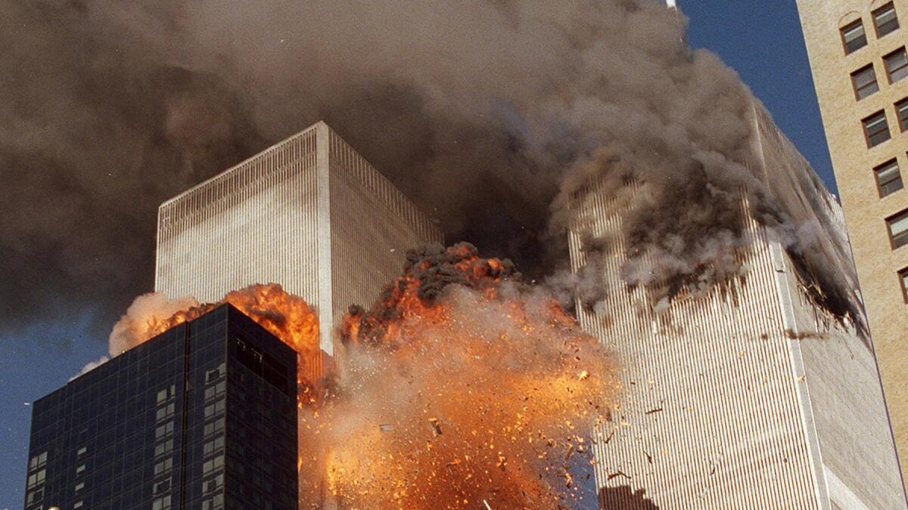

Siglo XXI
Descubre los eventos y personajes más relevantes de este siglo.
Explora MásDescubre los eventos y personajes más relevantes de este siglo.
Explora MásLos ataques terroristas en Estados Unidos marcaron el inicio de la "Guerra contra el Terrorismo" y cambiaron la política de seguridad global.
La inteligencia artificial ha experimentado un auge significativo en el siglo XXI, transformando industrias y nuestra vida cotidiana.